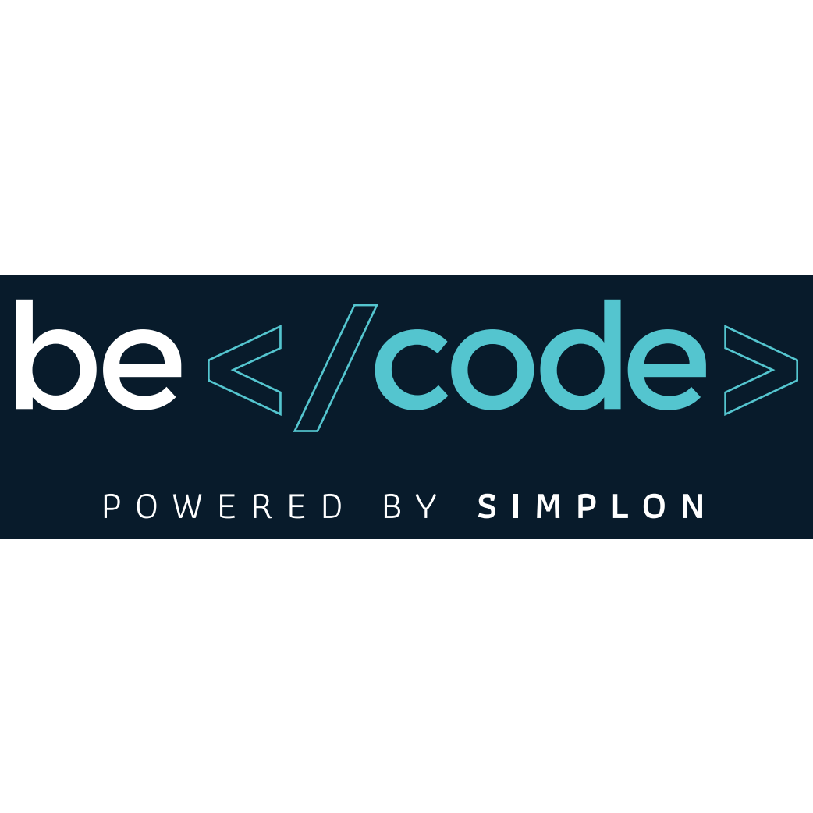

Star Fouz Becodeur ..
Les apprenant·e·s de BeCode.
<^p>BeCode permet à des personnes hyper motivées et autonomes de devenir junior web developers en six mois. C'est très intensif, car six mois, c'est très court. Elles/Ils entament un tournant dans leur carrière. Nos chatons apprenant·e·s sont enthousiastes et sont formé·e·s à apprendre rapidement. Vous pouvez les aider à réussir leur reconversion ; elles/ils peuvent vous aider à gérer votre workflow et atteindre vos objectifs. Après six mois de formation intense, nos apprenant·e·s sont prêt·e·s à se plonger dans votre code professionnel.Ce qu'elles/ils vous apporteront.
Ils/elles utilisent github depuis le premier jour. Ils/elles ont appris (pédagogie par projets pratiques) le markdown, le terminal, le HTML, CSS, javascript, PHP, MySQL et surtout appris à apprendre, à se débrouiller avec google, à toujours tenter d'être une solution pour leur équipe.
Pour eux, le stage représente une occasion d'apporter une première expérience professionnelle de codeur, activant leurs nouvelles compétences techniques et de savoir-être. Il permet aussi de prolonger leur apprentissage en confrontant ce qu’ils ont appris à BeCode avec la réalité de l’entreprise.
Les tâches, missions et activités que vous leur confierez seront liées à :
du développement frontend : HTML, CSS, javascript, Vue.JS, React, Angular du développement backend : PHP, MySQL, Node JS, React Native, Angular développement de prototypes fonctionnels de la maintenance de code existant l'apprentissage de langages supplémentaires
Ce qu'ils ne savent pas faire
Le café et les photocopies.
Ce que nous attendons de l'entreprise
L’entreprise s’engage à fournir une personne de référence (le “maître de stage”) qui veillera à coacher l’apprenant·e durant la durée du stage, à s'assurer de son insertion et à lui confier du travail en lien avec les objectifs précités.
Quand ? Combien de temps ?
La période de stage dure entre 1 et 3 mois suivant vos préférences.
BeCode souhaite bousculer les normes dans le domaine de la formation en proposant un cycle continu : tous les trois mois, nous proposerons à de nouveaux stagiaires web developers de faire le grand saut dans le monde professionnel en effectuant un stage en entreprise....